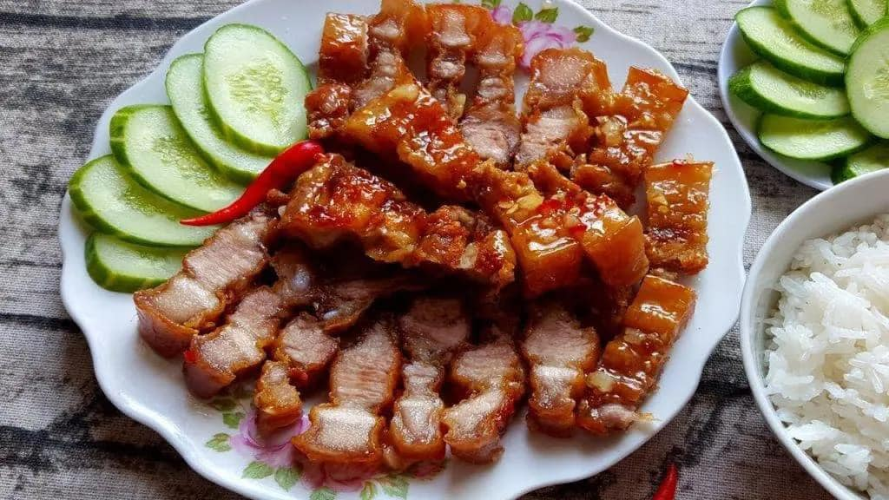

Thịt chiên nước mắm

Thành phần
- 1kg thịt ba chỉ
- 45ml nước mắm
- 15ml xì dầu
- 5g tiêu đen
- 60g bột chiên giòn
- 7g đường và dầu ăn
Các bước
- Bạn cho thịt vào thố. Thêm nước mắm, xì dầu, tiêu đen, bột chiên giòn và đường vào.
- Trộn đều thịt với gia vị. Ở một số công thức, người ta còn cho 1/2 quả trứng đánh đều vào cùng với thịt để lớp vỏ khi rán có màu vàng hơn.
- Trong chảo sâu lòng, bạn đổ dầu vào đun cho nóng. Khi dầu nóng, ta thả thịt vào rán ngập dầu.
- Bạn rán cho đến khi phần vỏ miếng thịt chuyển màu vàng nâu và giòn lại
- Lấy thịt ra, thấm cho ráo dầu rồi xắt thành miếng